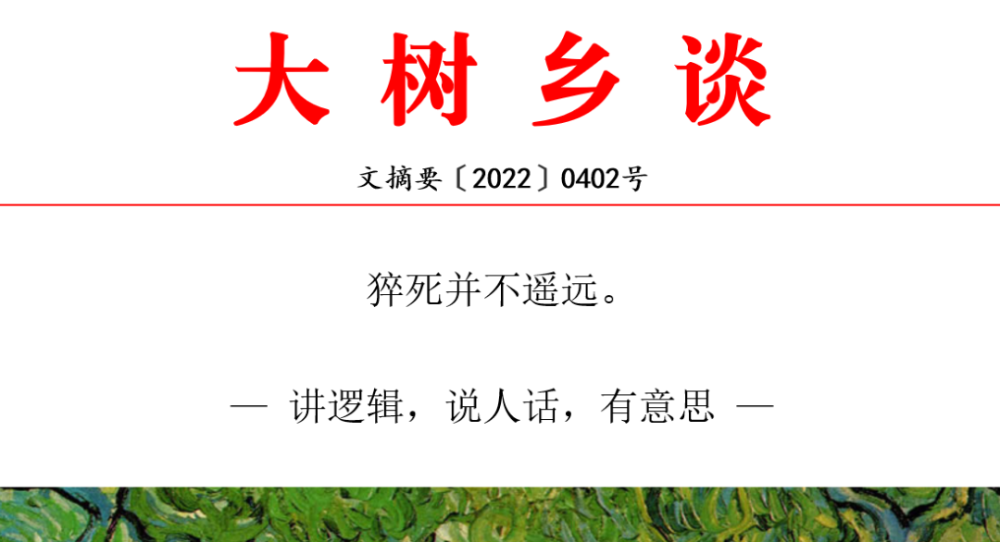

活着，才有希望

前几天，小镇在《中央部委公务员的待遇与发展》里聊了下中央部委公务员的一些事情，其中提到了工作压力比较大，猝死都有些习以为常，比如有的司局，这些年已经发生了多起猝死危机，只有1位最终救回来了。
就有读者留言觉得不可思议，觉得互联网才是猝死的高发区。事实上，对年轻人来说猝死并不遥远，这是一个典型的认知偏差。
按照世界卫生组织的认定：平时身体健康或者看起来健康的，在出乎意料的短时间内（一般是6小时内），因自然疾病突然死亡即为猝死。
据国家心血管病中心发布的《中国心血管健康与疾病报告2019》显示，在我国，预估每年有54.4万人逝于心源性猝死，非心源性的大概是心源性的四分之一，累计一年大概70万人猝死，大概人口比例是每年万分之五，猝死人数远超自杀、交通事故、白血病等等，而且呈现越来越年轻化的趋势，超过40%猝死的成年人小于40岁。
这个数据已经被很多研究证明，比如美国曾经在2005年7月1日到2006年6月30日监测中国北京、广州、克拉玛依、盂县等四地67万余人，其中284人被确认猝死，猝死发生率为万分之4.18。
就算比较发达的地区，猝死率也并不低，比如美国平均是每年万分之10；即使是我们认为比较轻松的丹麦，28到29岁年龄组猝死率也达到了每年万分之0.4；法国每年有4-5万成年人死因是心脏骤停或猝死，达到人口比例的千分之一；而即使在北京，根据《北京市城区居民心脏性猝死发生率的检测研究》显示，20多岁到40岁的男性心源性猝死率也基本在每年万分之0.4。
换言之，就算在发达地区、年轻人群体，每年每10万人最少也要有4人猝死，这还不算没有列入统计、及时发现抢救回来的。
小镇工作这些年，周围认识的猝死者也有近10位了，全部都是非互联网行业。当然小镇不是说互联网不忙，更不是说给的钱多就可以容忍猝死。
但事实是互联网从来不是加班最严重的行业，甚至都排不上前列，就算是加班最严重的大厂，多数人7点也下班了，更不要说上班时间本来就晚。真正加班最严重的是流水线工厂、是灵活就业人员、是一线的警察和医务工作者等等。
为什么我们会觉得互联网加班严重、容易猝死，说白了不过是网络声量的问题，其他行业很少被关注。说句残酷的，互联网大厂猝死率在全社会都属于相对低的，大多数人面临的猝死风险远高于互联网大厂。
说清楚这个事实当然不是今天的重点，最重要的还是要想办法解决。现在社会压力太大、生活不健康，国民普遍健康程度已经到了很严重的程度，猝死的风险越来越高。
对一个普通人来说，绝不能认为自己年轻就跟猝死没关系，不管在任何行业都有猝死的风险。无论有再多的财富、抱负、责任，死了就什么都没了，而猝死意味着完全没有任何准备，甚至留不下半句遗言。
都市里从事脑力劳动的猝死率更高。
脑力劳动绝不同于体力劳动，倘若是体力劳动，一旦累了整个身体会发出非常多信号，比如肌肉酸痛、无力、极其强烈的疲劳感，逼着人必须停下来休息才行。
但体力劳动就怕明明已经非常疲劳了，还必须坚持下去。比如最近越来越多医务、警务、社区等一线人员不得不持续作战，频频危及生命。
相比体力劳动，脑力劳动的危险之处在于大脑不容易感知到累，而身体也会因为其他部位活动较少更不容易感觉到疲劳，这就导致脑力劳动者非常容易超负荷劳动，只有当工作完成后一瞬间，才会觉得身体特别疲劳、手脚冰凉、心慌。
为什么这些年很多年轻人出现了以往老年人才会出现的病症？比如脑出血等心血管疾病，核心就在于用脑过度，本来大脑每天就需要消耗人体四分之一的氧气、三分之一的糖类，这些全都需要靠血管供给，现代人用脑远远超过古代人平均水平，而大脑绝不可能在几十年内充分进化。
这就导致在城市里从事脑力劳动的人，大脑每天都在承受达到极限的压力，大脑内部又缺少神经系统，就算大脑已经很痛苦了，我们也感觉不到。等我们能感觉到的时候，往往已经是大脑血管破裂的时候，比如头晕、意识模糊等等。每一次都可能是猝死。
更加严重的是，由于各种原因，很多人盲目、过度健身，轻信什么大脑疲劳以后运动下会更加轻松等等，一个个坐办公室的无论公务员、公司职工还是程序员，一到休息的时候就去跑步健身，觉得大脑休息了就接着工作，这真的是要命的事情。
一定要明白，中高等强度的运动也需要消耗精神力，脑子根本没有得到休息，更不要说很多人运动的时候还要听音乐甚至听各种课程。
能怎么办呢？
第一， 不要迷信自己的意志力，该休息就休息。
人的精神是无法超越肉体的，短暂的坚持的确可以克制肉体的需求，但是长期绝对做不到，千万别迷信所谓的成功学，非得逼着自己一天努力十几个小时，每天4点起床跑步、5点看书、6点工作，这样就是找死。
一定要注意保护身体，不抽烟少喝酒早睡早起健康饮食，这些都是真正的真理，当然不容易做到，但尽量有个数，别太过头。比如每周饮酒总量控制在自己酒量的2倍以内、两次喝酒至少间隔1天、每次饮酒到酒量的七成以内等等，都可以大大降低风险，毕竟对男性来说饮酒真的是少有的放松精神的途径。
第二，运动一定要适量。
不要觉得跑步6、7分钟跑一公里很慢了，甚至觉得一次跑步怎么也得5公里、10公里起，更甚至做各种强度很大的无氧运动，最关键的千万不要觉得自己是脑力劳动者、所以健身是休息。
这真的是大错特错，真正健康的运动应该是生活化的，比如隔几个小时做做简单的拉伸运动，休息的时候散散步，周末去公园转转，感受下鸟语花香。这样的才是对精神、大脑还有身体的放松。
健身当然可以增强身体的底蕴，但前提是选择合适的时间和强度，让身体有机会变强，而不是雪上加霜。
任何健身的原理都是对身体造成破损，然后身体修复不断变强，但是当一个人底子并不怎么样，已经很疲劳了，还要去做破损性的运动，这岂不是自虐吗？
而且看短视频、小说、综艺、电视剧等等也不是在休息，仍然要消耗大脑，尤其短视频，会导致意志力和关注力极大消耗，刷久了人只会特别疲劳。
第三， 一定要重视身体发出的细微信号。
猝死并不是一切都正常，然后突然死了，这是一个非常漫长的过程，身体早就有了先兆，这就是一种慢性疾病，只不过终点是突然的死亡。
小镇不是医生，每个人情况也不相同，小镇自己的方式也未必适合大家。但有一条，一定要注意自己身体的不舒服，任何不舒服都是警示，如果类似的不舒服频繁出现，一定要重视起来。
这些征兆比如疲倦、困顿、头疼、心律不齐、心慌等等，一旦出现了好歹站起来活动活动，喝喝水放松下，工作是干不完了，身体第一位。倘若出现了胸痛、呼吸困难、心绞痛等等，一定要去医院。
大家生活不易，很多事也是身不由己，疲劳作战在所难免。但起码重视起来，尽可能不在疲劳的时候过度劳累，至于跑步、健身、撸铁等等，奉劝大家谨慎为好，尤其是工作压力大、太久没有健身的人。
健康地活着，才有希望。
其他文章推荐
■ 2022年中国房地产政策、房价及个人选择
如果喜欢，还请点赞、“在看”和关注吧 欢迎分享，让更多人发现“大树乡谈”